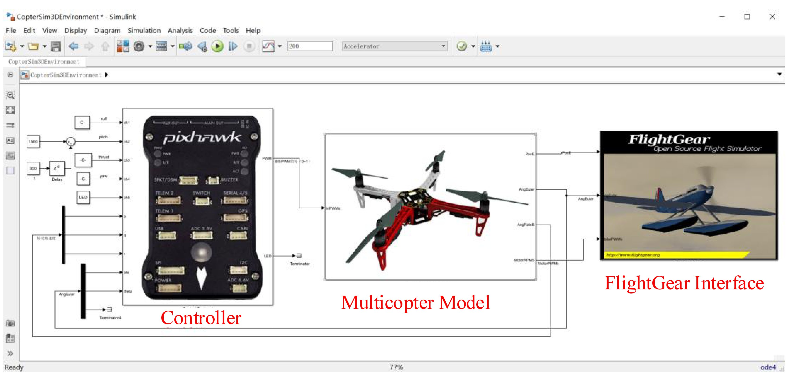

1. Brief Introduction to Experimental Platforms¶
1.1. Platform Composition¶
The experimental platform is a rapid development platform for multicopter control algorithm design based on MATLAB/Simulink and Pixhawk. It is mainly composed of the following five parts: the Simulink-based Controller Design and Simulation Platform, the HIL Simulation Platform, the Pixhawk Autopilot System , the Multicopter Hardware System, and the Instructional Package.
(1). Simulink-based Controller Design and Simulation Platform
As shown in Fig. 3.1, this platform has a high-fidelity nonlinear model for simulating various multicopter dynamics. Furthermore, there is an interface for communicating with the FlightGear simulator to provide a real-time 3D display for the flight status (e.g., trajectory and attitude) of the simulated multicopter. Multicopter control algorithms can be conveniently designed on this Simulink-based simulation platform and then verified with SIL simulations. Furthermore, the Pixhawk Support Package (PSP) toolbox can be used to generate C/C++ code of the control algorithms, which is then compiled and uploaded to a Pixhawk autopilot.
Fig. 3.1 Simulink-based controller design and simulation platform
(2). HIL Simulation Platform
The HIL simulation platform includes a real-time motion simulation software—CopterSim (see Fig. 3.2a) and a 3D visual display software—3DDisplay (see Fig. 3.2b). The simulation model of CopterSim is obtained by importing parameters from the Simulink-based simulation platform mentioned earlier. Both CopterSim and 3DDisplay must run on a computer with Windows OS (Win7 or higher, x64). They are connected with the Pixhawk autopilot through a USB cable, thereby establishing a closed-loop control system for HIL simulations.
Fig. 3.2 HIL simulation platform
(3). Pixhawk Autopilot System
Figure 3.3 illustrates the entire Pixhawk autopilot system that includes a Pixhawk autopilot, an RC transmitter, an RC receiver, and a Ground Control Station (GCS). The Pixhawk autopilot used in this book is composed of Pixhawk 1 (2MB flash version) [1] autopilot hardware and PX4 autopilot software. The PX4 autopilot software [2] has a built-in Real-Time Operating System (RTOS) to ensure basic functions, such as multi-thread scheduling, low-level drivers, and algorithm execution. The Pixhawk autopilot uses an RC receiver to wirelessly connect with the corresponding RC transmitter for receiving the control commands from the remote pilot on the ground. Further, the Pixhawk autopilot can also wirelessly connect with GCS through a pair of radio telemetry to exchange flight data and mission commands.
Fig. 3.3 Pixhawk autopilot system
(4). Multicopter Hardware System
As shown in Fig. 3.4, a multicopter hardware system is usually composed of an airframe system, a propulsion system, external sensors, a test stand, etc. Combining the Pixhawk autopilot and a multicopter hardware system requires an integrated multicopter flight platform that can be used to perform specific flight tasks. According to the actual flight performance requirements, the multicopter airframe system can be designed with different configurations, such as quadcopters, hexacopters, and coaxial octocopters. In this book, a small quadcopter is chosen as an example to study its hardware system design, such as airframe design, propulsion system selection. Then, the control algorithms are designed for the resulting multicopter hardware system.
Fig. 3.4 Multicopter hardware system
(5). Instructional Package
This book encompasses video tutorials, PowerPoint files, and source code examples. The topic is closely related to our previous book [3].
1.2. Platform Advantage¶
This experimental platform provides interfaces for multicopter controller design in MATLAB/Simulink. Readers (beginners, students, or engineers) can develop a rapid design and verify the control algorithms by SIL simulation. After the control algorithms are well designed and verified, the platform also provides a code generation function to generate Simulink controllers to C/C++ code. Then, the code can be compiled into the autopilot software firmware file; finally, it is automatically uploaded to the Pixhawk hardware. The platform also provides a HIL simulation platform for preliminary simulation tests on a Pixhawk autopilot system that may help in eliminating potential problems that may exist in flight tests. After all the tests are completed, indoor and outdoor flight tests can be carried out by assembling the Pixhawk autopilot onto a real multicopter hardware system. The performance of the designed controllers can be evaluated through experimental tests.
References
| [1] | corresponding to the circuit diagram version Pixhawk 2.4.6; for more details, please visit this website: https://docs.px4.io/master/en/flight_controller/pixhawk.html. |
| [2] | In addition to supporting the PX4 autopilot software used in this book, the Pixhawk series autopilots also support Ardupilot open-source autopilot software; see: http://ardupilot.org/dev/index.html. |
| [3] | © Publishing House of Electronics Industry 2020 Q. Quan et al., Multicopter Design and Control Practice, https://doi.org/10.1007/978-981-15-3138-5_3 |